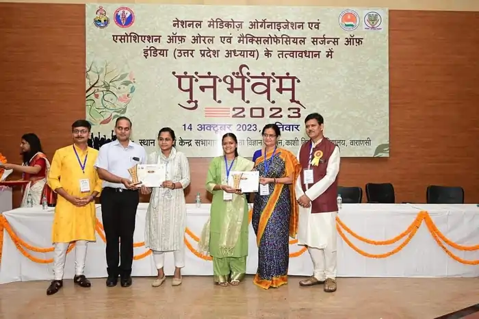

<script type="application/ld+json">
{
  "@context": "https://schema.org",
  "@graph": [
    {
      "@type": "Organization",
      "@id": "https://onlineyogaclass.in/#organization",
      "name": "Shringarika Mishra - Clinical Yoga",
      "url": "https://onlineyogaclass.in",
      "logo": "https://onlineyogaclass.in/images/logo.webp"
    },
    {
      "@type": "Person",
      "@id": "https://onlineyogaclass.in/#shringarika",
      "name": "Shringarika Mishra",
      "jobTitle": "Clinical Yoga Specialist & Research Scholar",
      "image": "https://onlineyogaclass.in/images/shringarika.webp",
      "sameAs": [
        "https://scholar.google.com/citations?user=FAp2CnkAAAAJ",
        "https://www.researchgate.net/profile/Shringarika-Mishra",
        "https://in.linkedin.com/in/shringarika-mishra-400607224"
      ]
    },
    {
      "@type": "BlogPosting",
      "@id": "https://onlineyogaclass.in/blogs/retinal-resilience-utilizing-clinical-eye-yoga-to-mitigate-micro-vascular-damage-in-diabetes.html#article",
      "isPartOf": {
        "@id": "https://onlineyogaclass.in/blogs/retinal-resilience-utilizing-clinical-eye-yoga-to-mitigate-micro-vascular-damage-in-diabetes.html"
      },
      "headline": "Retinal Resilience: Utilizing Clinical 'Eye Yoga' to Mitigate Micro-Vascular Damage in Diabetes",
      "description": "Diabetic Retinopathy is a progressive complication caused by chronic high blood sugar damaging the delicate capillaries of the retina. At BHU, our research into Restorative Endocrinology reveals that ocular health is not just about glucose control, but about Micro-Vascular Perfusion. Eye Yoga (Netra Vyayam) acts as a clinical tool to improve blood flow to the optic nerve and retina, helping to clear metabolic stagnation and reduce the Oxidative Stress that leads to "leaky" vessels. By strengthening the extraocular muscles, we achieve a state of Neural Recovery for the visual system.",
      "image": "https://onlineyogaclass.in/images/stress.webp",
      "author": {
        "@id": "https://onlineyogaclass.in/#shringarika"
      },
      "publisher": {
        "@id": "https://onlineyogaclass.in/#organization"
      },
      "mainEntityOfPage": "https://onlineyogaclass.in/blogs/retinal-resilience-utilizing-clinical-eye-yoga-to-mitigate-micro-vascular-damage-in-diabetes.html"
    },
    {
      "@type": "BreadcrumbList",
      "@id": "https://onlineyogaclass.in/blogs/retinal-resilience-utilizing-clinical-eye-yoga-to-mitigate-micro-vascular-damage-in-diabetes.html#breadcrumb",
      "itemListElement": [
        {
          "@type": "ListItem",
          "position": 1,
          "name": "Home",
          "item": "https://onlineyogaclass.in/"
        },
        {
          "@type": "ListItem",
          "position": 2,
          "name": "Clinical Blogs",
          "item": "https://onlineyogaclass.in/blogs.html"
        },
        {
          "@type": "ListItem",
          "position": 3,
          "name": "Retinal Resilience: Utilizing Clinical 'Eye Yoga' to Mitigate Micro-Vascular Damage in Diabetes",
          "item": "https://onlineyogaclass.in/blogs/retinal-resilience-utilizing-clinical-eye-yoga-to-mitigate-micro-vascular-damage-in-diabetes.html"
        }
      ]
    }
  ]
}
</script>

<main class="relative z-10 max-w-5xl mx-auto px-4 sm:px-6 lg:px-8 pt-32 pb-24">
    <div class="mb-10 max-w-3xl mx-auto rounded-[2.5rem] overflow-hidden bg-slate-50 border border-pink-50 shadow-md">
        
    </div>

    <div class="article-card bg-white border border-gray-100 rounded-[2.5rem] p-8 md:p-12 shadow-sm transition">
        <script type="application/ld+json">
    {
      "@context": "https://schema.org",
      "@type": "BlogPosting",
      "headline": "How to Use 'Eye Yoga' to Prevent Diabetic Retinopathy: A Clinical Protocol",
      "description": "Scientific exploration of Netra Kriya and micro-vascular ocular health. Learn how Eye Yoga improves retinal perfusion and manages oxidative stress in diabetic patients.",
      "keywords": "Clinical Yoga in Varanasi, BHU Yoga Specialist, Eye Yoga for diabetes, prevent diabetic retinopathy, Shringarika Mishra Research, Netra Vyayam for eye health",
      "author": {
        "@type": "Person",
        "name": "Shringarika Mishra"
      }
    }
    </script>

    <span class="text-pink-600 font-bold text-xs uppercase tracking-widest">Ocular Pathophysiology &amp; Micro-Vascular Health</span>
    <h2 class="text-3xl md:text-4xl font-bold mt-2 mb-6">Retinal Resilience: Utilizing Clinical 'Eye Yoga' to Mitigate Micro-Vascular Damage in Diabetes</h2>
    
    <div class="flex flex-col md:flex-row gap-8 mb-8">
        <div class="md:w-1/3">
            
        </div>
        <div class="md:w-2/3">
            <p class="text-gray-600 text-lg leading-relaxed">
                Diabetic Retinopathy is a progressive complication caused by chronic high blood sugar damaging the delicate capillaries of the retina. At <strong>BHU</strong>, our research into <strong>Restorative Endocrinology</strong> reveals that ocular health is not just about glucose control, but about <strong>Micro-Vascular Perfusion</strong>. <strong>Eye Yoga</strong> (Netra Vyayam) acts as a clinical tool to improve blood flow to the optic nerve and retina, helping to clear metabolic stagnation and reduce the <strong>Oxidative Stress</strong> that leads to "leaky" vessels. By strengthening the extraocular muscles, we achieve a state of <strong>Neural Recovery</strong> for the visual system.
            </p>
        </div>
    </div>
    
    <div class="full-content text-gray-700 space-y-8 leading-relaxed border-t border-gray-50 pt-8">
        
        <section>
            <h3 class="text-2xl font-bold text-gray-900 mb-3">The Pathology of 'Sugar-Induced' Retinal Stress</h3>
            <p>
                From a neuro-anatomical perspective, the retina has the highest metabolic rate of any tissue in the body. High glucose leads to <strong>Capillary Basement Membrane Thickening</strong>, which restricts oxygen delivery. 
            </p>
            
            <p>
                According to reports by the <strong>World Health Organization (WHO)</strong>, diabetic eye disease is a leading cause of preventable blindness. The implication is that we must maintain <strong>Vascular Elasticity</strong> in the eyes. Through <strong>Varanasi Clinical Yoga</strong>, we use rhythmic eye movements to stimulate the <strong>Ciliary Body</strong> and improve the drainage of aqueous humor, ensuring the intraocular pressure remains stable.
            </p>
            <div class="my-6">
                
            </div>
        </section>

        <section class="bg-pink-50 p-8 rounded-3xl border-l-8 border-pink-400">
            <h3 class="text-xl font-bold text-pink-800 mb-4">Interesting Fact: The Palming Effect</h3>
            <p class="text-sm italic mb-4">
                Did you know that the simple act of 'Palming' can lower the metabolic demand of your eyes? Clinical research indicates that covering the eyes with warm palms creates a "darkness therapy" effect that allows the retinal <strong>photoreceptors</strong> to rest and regenerate, significantly reducing the inflammatory load in diabetic patients.
            </p>
        </section>

        <section>
            <h3 class="text-2xl font-bold text-gray-900 mb-3">The 3-Step 'Retinal Perfusion' Protocol</h3>
            <p>At <strong>onlineyogaclass.in</strong>, we use this 10-minute clinical sequence to achieve <strong>Biological Scaling</strong> for eye health:</p>
            
            <div class="space-y-6 mt-4">
                <div class="border border-pink-100 p-5 rounded-2xl bg-white shadow-sm">
                    <h4 class="font-bold text-gray-900 mb-2"><i class="fas fa-arrows-alt text-pink-400 mr-2"></i>1. Sanchalana (Clockwise Rotations)</h4>
                    <p class="text-sm">Slowly move your eyes in a wide circle without moving your head. This movement stretches the eye muscles and manually "pumps" blood through the ocular veins, preventing the stagnation that leads to <strong>Neovascularization</strong> (new, weak vessel growth).</p>
                </div>
                <div class="my-6">
                    
                </div>
                <div class="border border-pink-100 p-5 rounded-2xl bg-white shadow-sm">
                    <h4 class="font-bold text-gray-900 mb-2"><i class="fas fa-bullseye text-pink-400 mr-2"></i>2. Trataka (Steady Gazing)</h4>
                    <p class="text-sm">Fix your gaze on a single point (like a candle flame or a dot) until the eyes water. This reflex tear production flushes the ocular surface and stimulates the <strong>Lachrymal Gland</strong>, which is linked to deep <strong>Neural Recovery</strong> for the optic nerve.</p>
                </div>
            </div>
        </section>

        <section>
            <h3 class="text-2xl font-bold text-gray-900 mb-3">Managing 'Vision-Stress' in PCOS</h3>
            <p>
                In <strong>PCOS</strong>, insulin resistance can cause subtle changes in the lens of the eye, leading to fluctuating vision. Our <strong>BHU Yoga Specialist</strong> led protocols focus on <strong>Shambhavi Mudra</strong> (eyebrow center gazing) to balance the <strong>Pituitary Gland</strong>. This stabilizes the <strong>Lunar Rhythm</strong> of your hormones, which in turn protects the vascular health of your eyes.
            </p>
        </section>

        <section>
            <h3 class="text-2xl font-bold text-gray-900 mb-3">Why 'Clinical' Eye Yoga is Mandatory</h3>
            <p>
                As a <strong>Gold Medalist (University of Patanjali)</strong> and <strong>Research Scholar at BHU</strong>, I advocate for precision. Eye yoga must be done without straining the <strong>Cervical Spine</strong>, as neck tension can block blood flow to the head. This evidence-based approach at <strong>onlineyogaclass.in</strong> is why our global students report not only clearer vision but a significant reduction in the ocular fatigue associated with metabolic disorders.
            </p>
        </section>

        <div class="border-t border-gray-100 pt-8 mt-8">
            <div class="bg-gray-900 text-white p-8 rounded-[2rem] shadow-2xl relative overflow-hidden">
                <div class="flex flex-col md:flex-row items-center gap-8 relative z-10">
                    
                    <div>
                        <h4 class="text-2xl font-bold mb-2">About Shringarika Mishra</h4>
                        <p class="text-sm text-gray-300 leading-relaxed">
                            Gold Medalist (University of Patanjali) &amp; NET JRF (AIR 2). Research Scholar at <strong>Banaras Hindu University (BHU)</strong> specializing in Clinical Yoga for Diabetes and Infertility. With 11+ years of experience, she provides evidence-based ocular support through <strong>onlineyogaclass.in</strong>.
                        </p>
                        <div class="flex gap-4 mt-4">
                            <a href="https://www.researchgate.net/profile/Shringarika-Mishra" target="_blank" class="text-xs text-blue-400 font-bold hover:underline"><i class="fab fa-researchgate mr-1"></i> ResearchGate</a>
                            <a href="https://scholar.google.com/citations?user=FAp2CnkAAAAJ&amp;hl=en" target="_blank" class="text-xs text-red-400 font-bold hover:underline"><i class="fab fa-google mr-1"></i> Google Scholar</a>
                        </div>
                    </div>
                </div>
                
                <div class="mt-10 flex flex-col md:flex-row justify-center gap-4">
                    <a href="../../programs/#diabetes" class="bg-pink-600 text-white px-10 py-4 rounded-full font-bold hover:bg-pink-700 transition shadow-lg text-center text-lg">
                        Join the Diabetes Management Batch
                    </a>
                    <a href="https://wa.me/919559827280" class="border-2 border-green-500 text-green-500 px-10 py-4 rounded-full font-bold hover:bg-green-50 transition text-center text-lg">
                        <i class="fab fa-whatsapp mr-2"></i> Free Clinical Consultation
                    </a>
                </div>
            </div>
        </div>

        <p class="text-[10px] text-gray-400 mt-12 text-center leading-relaxed italic">
            <strong>Medical Disclaimer:</strong> The clinical information and research-based insights provided in this article are for educational purposes based on research conducted at BHU. This is not a substitute for professional medical advice, diagnosis, or treatment. Diabetic retinopathy is a serious condition; always consult with your ophthalmologist or a Clinical Yoga Specialist before starting new therapeutic protocols, especially if you have existing retinal damage or laser treatments.
        </p>
    </div>
        
        
                    <div class="mt-12 pt-8 border-t border-slate-100 text-left">
                        <h4 class="text-xl font-black text-slate-900 tracking-tight mb-4 flex items-center gap-2">
                            <span class="w-1 h-6 bg-pink-500 rounded-full"></span> Read More Clinical Insights
                        </h4>
                        <ul class="space-y-3 font-semibold text-pink-600 text-sm md:text-base">
                            <li>
                                <a href="the-cellular-shake-why-hyperthyroid-anxiety-is-a-physiological-hijack-rather-than-mental-stress.html" class="hover:text-pink-700 hover:underline transition flex items-center gap-2">
                                    <i class="fas fa-book-open text-xs text-pink-400"></i> The Cellular Shake: Why Hyperthyroid Anxiety is a Physiological 'Hijack' Rather Than Mental Stress
                                </a>
                            </li>
                            <li>
                                <a href="thermal-modulation-utilizing-5-clinical-mudras-to-calibrate-the-fire-element-and-metabolic-efficiency.html" class="hover:text-pink-700 hover:underline transition flex items-center gap-2">
                                    <i class="fas fa-book-open text-xs text-pink-400"></i> Thermal Modulation: Utilizing 5 Clinical Mudras to Calibrate the 'Fire Element' and Metabolic Efficiency
                                </a>
                            </li>
                        </ul>
                    </div>
    </div>
</main>
